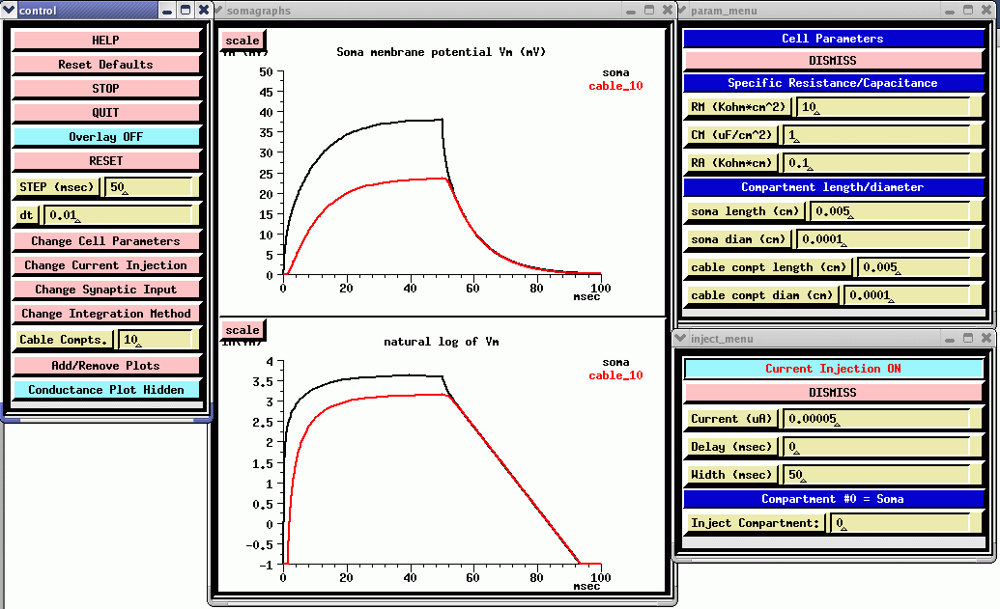

Return to the main page
Return to the main page
The first tutorial in the series simulates an extensible neuronal cable, and is described in Chapter 5 of The Book of GENESIS. The Cable tutorial simulation allows one to construct an extensible neuronal cable. Current injection or synaptic input may be provided to any one of the compartments, and all relevant parameters are adjustable from "pop-up" menus. In the figure below, a passive cable was created with a soma and 10 identical dendrite compartments. A 50 picoampere current injection pulse was applied to the soma, and the resulting membrane potential and its natural log were plotted for the soma and the most distal dentrite compartment.

Note that the log plot becomes linear at longer times, when the term in the series with the largest time constant dominates. From the slope of this line, you should be able to calculate that the membrane time constant is about 10 msec, which is the value of RM*CM. These plots will also let you calculate the voltage attenuation with distance, and compare it with the predicted results for an infinitely long cable using the value of the space constant (lamda) and the parameter values that are shown above.